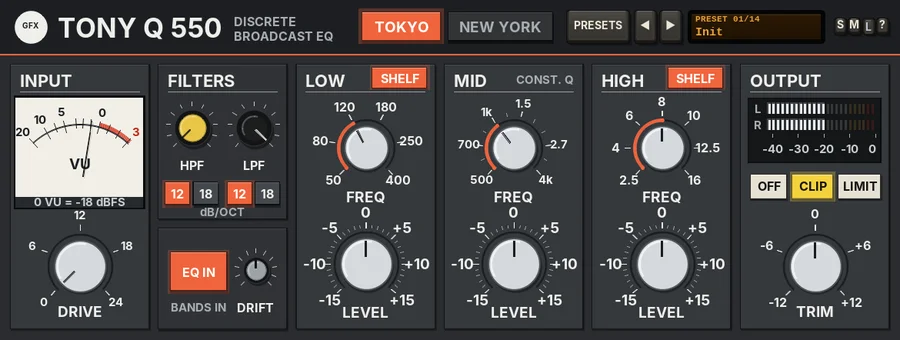

Tony Q 550
A three-band stepped console equaliser with two personalities: TOKYO, a constant-Q broadcast EQ with a mid-focused output transformer, and NEW YORK, a punchy proportional-Q console EQ.

Overview
Tony Q 550 is a channel equaliser with three stepped bands (LOW, MID and HIGH), a high-pass and a low-pass filter, a discrete preamp you can drive and an output stage with real character. Two CITY keys switch between two complete engines, each with its own faceplate and its own settings.
TOKYO is in the spirit of the Japanese discrete broadcast consoles. Its bells are constant-Q: the width never changes with the gain. The midrange is the star, with twelve steps from 500 Hz to 4 kHz, and it feeds a mid-focused output transformer: only the 400 Hz - 5 kHz part of the signal goes through the iron, so a pushed mid blooms and gently compresses while the kick, the bass and the air stay clean. The faceplate is charcoal with white print.
NEW YORK is in the spirit of the classic American stepped three-band console EQ. Its bells are proportional-Q: wide and musical at small boosts (about 0.6 at 2 dB), getting narrower as you push them (about 2.5 at 12 dB), on the classic stepped frequency and gain layout. It runs into a fast discrete op-amp, clean until it nears its rails and then a hard knee, and an output transformer that thickens the low end first. Transients come forward and punch. The faceplate is blue-grey with cream print.
The whole engine runs at twice the sample rate, so the saturation stays clean at the top. Every stepped switch glides to its new value, so nothing clicks as you turn it.
Reach for it for
- Vocals that need presence and bite without harshness (TOKYO's mids into the iron)
- Guitars and keys that should bloom and sit forward in the midrange
- Punchy kick, snare and bass shaping (NEW YORK)
- Drum buses and mix buses that want a little console weight
- Quick, decisive EQ moves on a stepped layout that is hard to overdo
- Adding colour with INPUT DRIVE, with the EQ flat
Controls
The header
- TOKYO / NEW YORK
- The CITY keys. The lit key is the engine you hear and the faceplate you see. Each city keeps its own settings, so you can set up both and switch to compare. A change starts the other engine, lets it settle for 40 ms and crossfades to it in 30 ms, with no click. The two engines are phase-matched, so the crossfade never combs. TOKYO by default.
- PRESETS
- Opens the full preset list. The last entry, Reset all to defaults, loads Init and also sets DRIFT to 50% and the input TRIM to 0 dB.
- ◄ / ►
- Step to the previous or next preset (wrapping round).
- Preset display
- Shows the preset number and name. Click it for the preset list too. While you move a control, it shows that control's name and value for a moment.
- S / M / L
- Panel size: small, medium or large. The panel also scales to fit the plugin window.
- ?
- Opens a pop-up with the design credit, the GFX website address and the address of this manual. Click anywhere to close it.
INPUT
- TRIM (silver cap)
- The input trim, -18 to +18 dB (0 dB by default; the 0 dB centre is marked at the top of its ring). It is the very first thing in the signal path, before the VU and DRIVE, so the VU shows the trimmed level: turn a hot source down until the needle swings around 0 VU, or bring a quiet one up. It glides (about 20 ms), so it never zips. It is a gain-staging control, shared by both cities: presets leave it alone (only Reset all to defaults returns it to 0 dB). The value shows while you hover over it.
- VU
- A VU meter on the input, after the TRIM, with a real needle (it swings and settles like a moving coil). 0 VU = a sine peaking at -18 dBFS.
- DRIVE
- INPUT DRIVE: 0 to +24 dB of gain into the engine (0 dB by default). The same amount is taken off again at the end, so DRIVE changes the character, not the loudness - like turning the mic amp up and the fader down. It pushes the discrete preamp (mostly second harmonic, with the peaks tightened), the EQ and the output stage harder. At 0 dB the preamp is out of circuit; it fades in over the first 2 dB. In NEW YORK, a gentle bump of up to +1 dB at 45 Hz also comes in with DRIVE, as the transformer is worked.
FILTERS
A high-pass filter before the three bands and a low-pass filter after them. Each city has its own.
- HPF (yellow cap)
- The high-pass corner, 20 - 400 Hz. Fully left reads OFF and takes the filter out of circuit; OFF by default. Switching it in, the corner glides up from below, so there is no thump.
- LPF (black cap)
- The low-pass corner, 3 - 22 kHz. Fully right reads OFF; OFF by default.
- 12 / 18 (dB/OCT)
- The slope keys under each filter: 12 or 18 dB per octave, both clean Butterworth shapes. 12 by default. Changing slope crossfades in 20 ms.
EQ IN and DRIFT
- EQ IN
- Switches the three bands in or out (in by default); the caption reads BANDS IN or BANDS OUT. The change glides. The filters, the preamp and the output stage stay in either way, so you hear exactly what the EQ curve is doing.
- DRIFT
- Component tolerance wander, 0 - 100% (50% is the standard amount and the default). See Drift below.
LOW, MID and HIGH
Each band has a stepped frequency switch above a stepped gain switch. The labels and the steps change with the city. A band set to 0 dB is completely out of circuit. On LOW and HIGH, a SHELF key turns the band from a bell into a shelf; on MID the corner reads CONST. Q (TOKYO) or PROP. Q (NEW YORK).
- FREQ (TOKYO)
- LOW: 50, 80, 120, 180, 250 or 400 Hz (120 Hz by default). MID: 500, 600, 700, 800 Hz, 1, 1.2, 1.5, 1.8, 2.2, 2.7, 3.3 or 4 kHz (1 kHz). HIGH: 2.5, 4, 6, 8, 10, 12.5 or 16 kHz (8 kHz).
- LEVEL (TOKYO)
- -15 to +15 dB in 1 dB steps, 0 dB by default. The bells are constant-Q: LOW and HIGH about 1.4 octaves wide (Q 1.0), MID a little narrower (Q 1.2, about 1.1 octaves), whatever the gain.
- FREQUENCY (NEW YORK)
- LOW: 50, 100, 200, 300 or 400 Hz (100 Hz by default). MID: 400, 800 Hz, 1.5, 3 or 5 kHz (1.5 kHz). HIGH: 5, 7, 10, 12.5 or 15 kHz (10 kHz).
- BOOST / CUT (NEW YORK)
- The classic steps: 0, 2, 4, 6, 9 or 12 dB of boost or cut, 0 dB by default. The bells are proportional-Q: a small move is broad and gentle, a big one narrow and focused.
- SHELF
- LOW and HIGH only, on by default. Lit, the band is a shelf at its frequency; unlit, a bell (TOKYO) or peak (NEW YORK). TOKYO's shelves are smooth, with no overshoot; NEW YORK's have the classic slight dip just beyond the corner and a small bump on the shelf. Switching dips the band out and back in 8 ms, so it does not click.
OUTPUT
- Output meter
- An LED ladder for the left and right output, -40 to 0 dBFS, with an instant rise and a slow fall.
- TRIM
- The output level, -12 to +12 dB (0 dB by default). Each city has its own TRIM.
The output stages
In TOKYO the signal is split at 400 Hz and 5 kHz by phase-matched crossovers, so the three parts add back up flat. Only the mid part goes through the transformer core: a soft knee, mostly third harmonic with a little second as it is worked, a touch of hysteresis that opens up with level, and a bloom that eases the band down by up to about 1.5 dB when it is pushed. Below the knee it passes untouched. So a mid boost into a hot signal thickens and settles, while the lows and highs stay clean.
In NEW YORK the discrete op-amp is clean (just a trace of second harmonic) until it nears its rails, then folds over with a hard knee, and a soft slew limit rounds the steepest edges of hot high-frequency peaks. The output transformer saturates on flux, so the low end thickens first.
Drift
DRIFT lets the components wander slowly, as on two hand-built channels. At 100% each band's frequency wanders by up to about 1.2% and its gain by about 2%, the preamp and op-amp bias moves, and the transformer's saturation point by about 4%. A small fixed mismatch between left and right is added too. At 0% both channels are identical and steady.
Knobs and switches: drag up or down (Shift for fine moves), use the mouse wheel for one step, and double-click to reset to the default.
Latency
The twice-the-sample-rate engine adds 47 samples of latency. It is reported to REAPER, which compensates for it.
Presets
A preset sets one city's DRIVE, bands, filters and TRIM, switches to that city and switches EQ IN on. The other city keeps its settings. DRIFT, the input TRIM and the output stage are left as they are.
- Init
- Both cities flat, filters off, output TRIM 0 dB, on TOKYO.
- Tokyo Vocal Bite
- A little drive, a low shelf trimmed at 180 Hz, +5 dB at 2.7 kHz, a +3 dB shelf at 12.5 kHz and the HPF at 90 Hz.
- Tokyo Snare Crack
- Drive 8 dB, +3 dB at 250 Hz, a dip at 1.5 kHz and +6 dB at 4 kHz, with an 18 dB HPF at 100 Hz.
- Tokyo Guitar Bloom
- Drive 10 dB into a +6 dB mid at 1 kHz, a cut at 180 Hz, a little top, HPF 80 Hz and LPF 12 kHz.
- Tokyo Keys Presence
- Gentle: a low shelf trimmed at 120 Hz, +3 dB at 2.2 kHz and a +4 dB shelf at 10 kHz.
- Tokyo Bus Gloss
- A +2 dB shelf at 50 Hz, a touch out at 800 Hz and a +3 dB shelf at 12.5 kHz, with a little drive.
- Tokyo Mid Push
- Drive 12 dB and +9 dB at 1.8 kHz: the mid-focused transformer working hard.
- New York Kick
- +6 dB at 100 Hz, -6 dB at 400 Hz and +4 dB of click at 5 kHz.
- New York Snare Snap
- Drive 10 dB, +4 dB at 200 Hz, +6 dB at 3 kHz and a +4 dB shelf at 10 kHz, with an 18 dB HPF at 80 Hz.
- New York Bass Punch
- A +6 dB low shelf at 100 Hz, +2 dB at 800 Hz, a little out at 5 kHz and the LPF at 10 kHz.
- New York Vocal
- A low shelf trimmed at 200 Hz, +4 dB at 3 kHz and a +4 dB shelf at 10 kHz, HPF 80 Hz.
- New York Drum Bus
- Drive 9 dB, a +4 dB shelf at 100 Hz, a dip at 800 Hz and a +4 dB shelf at 12.5 kHz.
- New York Guitar
- Drive 12 dB, a cut at 200 Hz, +4 dB at 3 kHz and +2 dB at 7 kHz, with an 18 dB HPF at 100 Hz and LPF 14 kHz.
- New York Air
- Just a +6 dB shelf at 15 kHz and a touch of drive.
Tips
- Gain-stage first: if the VU is pinned, pull the input TRIM down until the needle swings around 0 VU, then set DRIVE by ear.
- Set up the same move in both cities and flip the CITY keys: TOKYO's mid thickens and settles, NEW YORK's jumps forward.
- On TOKYO, push the MID with a little DRIVE to hear the transformer bloom; the low end stays tight however hard you go.
- On NEW YORK, small boosts are broad and kind - use 2 or 4 dB for tone, 9 or 12 dB to pick out one thing.
- With every band at 0 dB, DRIVE alone is a quick way to add console colour without changing the level.
- Use EQ IN to compare the curve with the colour still in circuit; set TRIM to match the loudness first.
- Set DRIFT to 0 for a static, repeatable EQ; leave it at 50% for a less clinical, hardware-like feel.
File: gfx-tony-q-550.jsfx